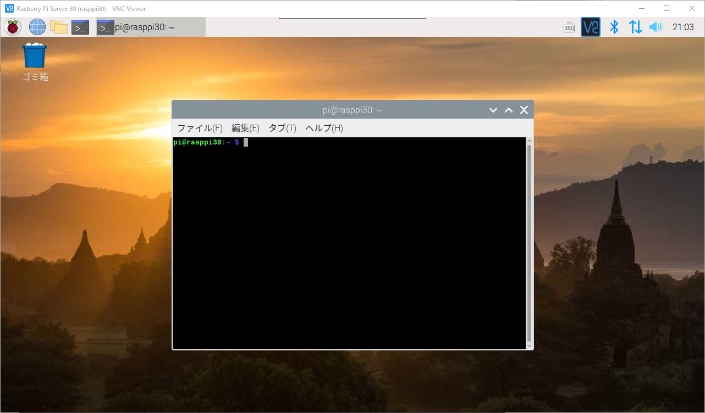
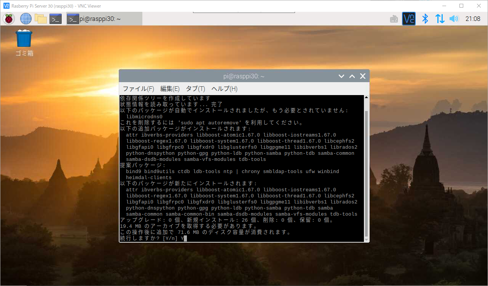
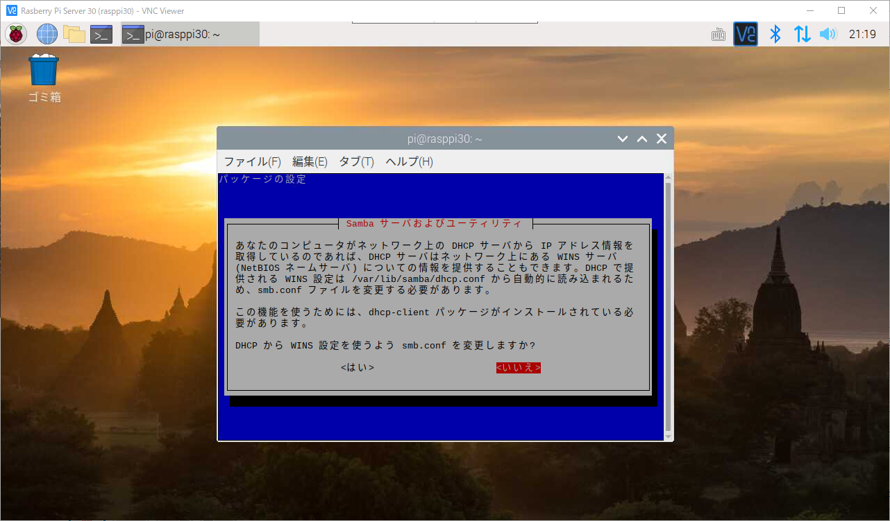
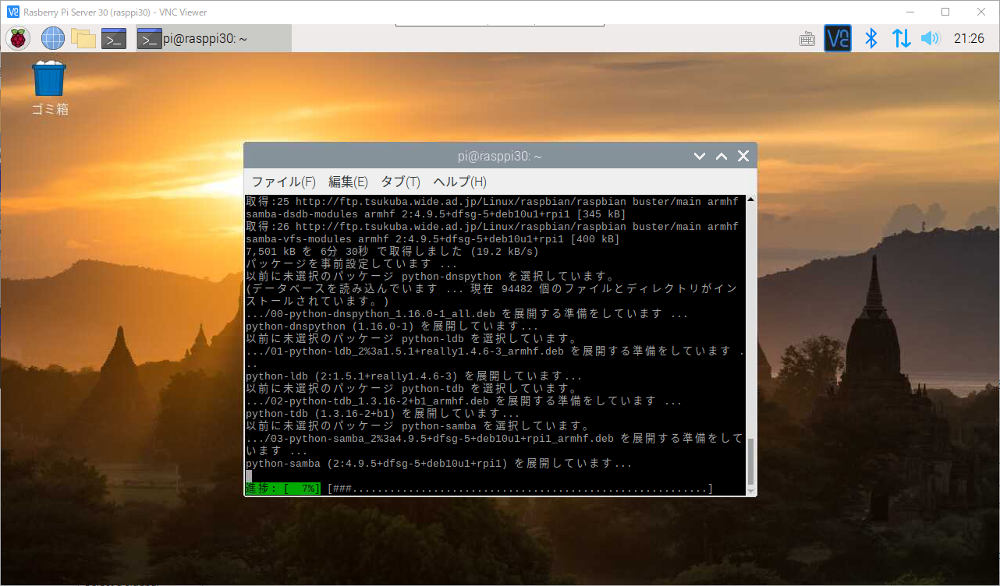
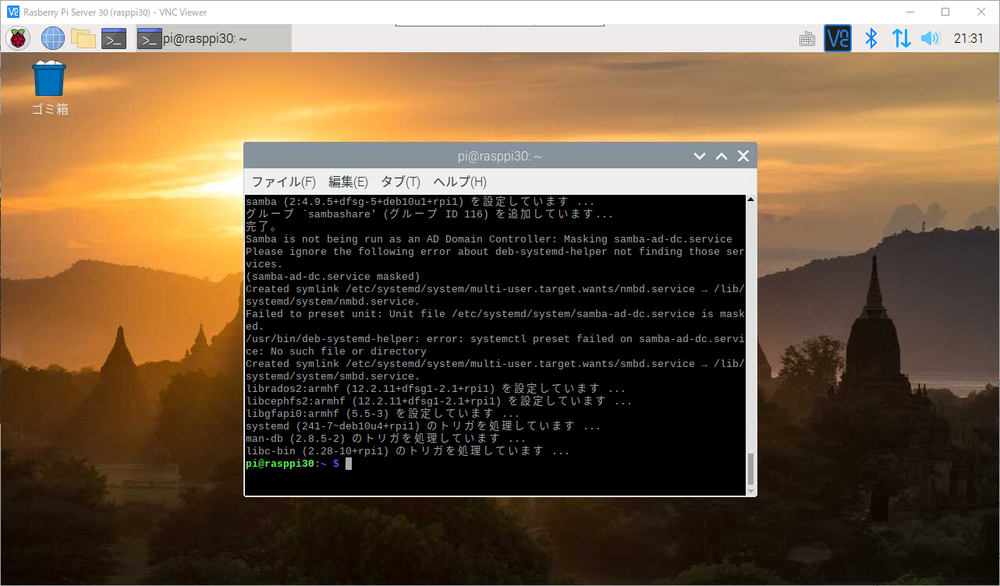
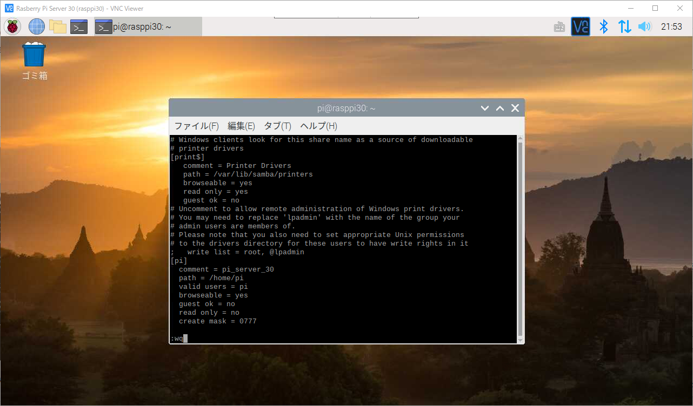
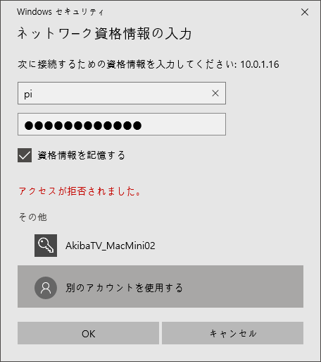
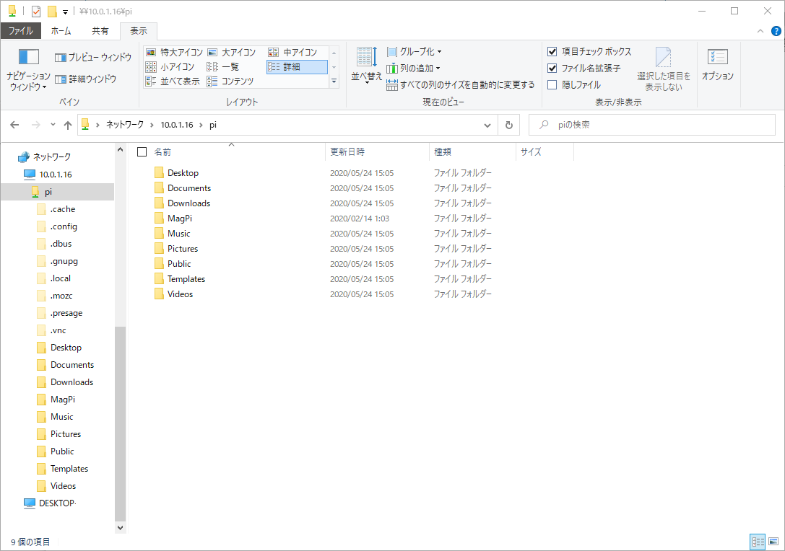

라즈베리파이 삼바 연결설정
삼바(Samba)란?
삼바는 리눅스(UNIX-like)와 윈도우간에 파일 및 프린터를 공유 할 수 있게 해주는 패키지입니다.
컴퓨터 간 파일 공유등의 서비스를 구현하는데 SMB/CIFS 프로토콜를 사용하여, UNIX-like 시스템뿐 아니라 OpenVMS, OS/2, AmigaDOS,
그리고 Netware같은 다양한 플랫폼에서 지원됩니다. 삼바를 통해 리눅스 서버를 타운영체제와 파일을 공유할 수 있는 파일서버로도 사용할 수 있습니다.
라즈베리파이를 NAS 대용으로 사용하게 만들어주는 기능이라고 볼 수 있습니다.
삼바 공식 사이트
라즈베리파이에 삼바 연결하기
VNC로 라즈베리파이에 접속을 한뒤 콘솔창을 실행합니다.

첫 단계로 다음 apt 명령어를 사용하여 삼바(samba) 패키지를 설치합니다.
콘솔창에 아래의 명령을 입력합니다.
1 | $ sudo apt install samba samba-common-bin |
패키지 다운로드에 71메가 정도 용량을 사용해도 되는 물어보는 메세지가 나옵니다.
다운로드를 할건지 Y/n가 나올경우 Y를 입력후 엔터를 치시기 바랍니다.

다운로드를 시작합니다.
당신의 컴퓨터가 네트워크의 DHCP서버로부터 IP정보를 취득하고있을경우 DHCP서버는 네트워크의 WINS서버
(NetBIOS 네임서버)에 들어있는 정보를 공유하는게 가능합니다. DHCP에서 smb.conf파일의 변경이 필요한경우가 있습니다.
이 기능을 사용을 위해선 dhcp-client 패키지가 인스톨이 되어 있어야만 합니다.
DHCP에서 WINS설정을 사용해서 smb.conf를 변경하시겠습니까?라고 나옵니다만
알기 어려운 내용이기에 NO를 선택후 엔터를 칩니다.

일단 계속해서 패키지 설치가 진행됩니다.

한참 기다리시면 아래와 같이 나오며 설치가 완료 되었습니다.

설치가 완료되면 smbpasswd로 삼바를 사용할 id를 추가합니다.
이때 설정한 ID를 사용하여 같은 네트워크에 있는 컴퓨터에서 라즈베리파이로 삼바를 접속할때 사용하게 됩니다.
이때 설정할 ID와 비밀번호는 라즈베리파이와 똑같이 사용하지 않으셔도 됩니다.
일단 저는 라즈베리파이와 동일하게 ID를 pi를 사용하며 비밀번호도 동일하게 설정을 하도록 하겠습니다.
콘솔창에 아래의 명령어를 입력하시고 엔터를 치십시오. (아이디 부분은 원하시는 아이디를 입력해 주세요.)
1 | $ sudo smbpasswd -a pi(아이디/ユーザーID) |
아이디와 비밀번호를 세팅하시면 일반 접속정보는 설정이 완료 되었습니다.
이제는 삼바 설정을 해야합니다. 삼바 설정 파일인 smb.conf 편집합니다.
아래의 명령어를 입력하신후 엔터를 치십시오.
1 | $ sudo vi /etc/samba/smb.conf |
커서를 가장 아래까지 내려간뒤 키보드의 a키를 누르시면 입력가능하게 바뀌게 됩니다.
아래의 내용을 입력하시기 바랍니다.
꼭 아래와 같이 하실필요 없이 자신이 원하는 설정으로 하시면 되겠습니다.
1 | [pi] |
입력을 끝내셨으면 :키를 누르신후 wq를 입력후 저장과 동시에 vi입력창에서 빠져나오게 됩니다.

설정 완료 후에는 samba를 재시작 합니다.
아래의 명령어를 입력후 엔터를 치십시오.
1 | $ sudo /etc/init.d/smbd restart |
이제 윈도우 탐색기에서 \\10.0.1.16\pi 와 같이 접속합니다.
주소 형식 : \\[라즈베리파이 IP 주소][삼바 계정 id]
본인 환경에 따라 주소를 입력하시면 됩니다.
입력 주소를 윈도우 탐색기에서 입력하면 아래와같이 계정 정보를 입력 메뉴가 실행됩니다.

라즈베리파이 서버로 접속이 되면 아래와 같이 폴더가 표시되게 됩니다.
일단 파일 읽기와 쓰기가 모두 되면 권한 설정이 정상입니다.
읽기와 쓰기에 권한 문제가 발생하면 smb.conf 파일에 설정을 점검이 필요합니다.
